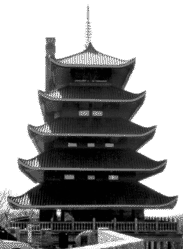

On Saturday I went on a BCP (Bike Club of Philadelphia) ride. Five of us (me, the two leaders--Glenn and Luis, and two other guys) met behind the Art Museum and carpooled out to the Daniel Boone Homestead, where one other woman joined us. So all in all, we were six, four men and two women, which is a pretty low turnout for this kind of ride: 47 hilly miles thru' nice scenic country. Glenn, one of the leaders, put it down to this being an MS 150 this weekend, which took out alot of people who would usually go on this sort of ride. But this low turnout had some very nice results -- we were all in pretty good shape, so we were able to keep up a steady, decent pace, with only a minimal amount of the usual stop and go that happens when the faster riders wait up for the slower ones. It also meant that I learned the names of all the people on the ride, which never happens on larger rides. Of course, it helped that I knew three of the people from a previous ride that Glenn had lead.
The weather was "unseasonal", to quote one of the riders. It was warm (luckily not hot) and hazy and humid, and yet there were strong signs of fall. Because of the dryness of the summer, the leaves out there (Berks County, PA) had already started to turn. And so there was dry leaves on the road, and the occasional patch of apples creating hazards (prompting Luis to warn of "crabapples!" instead of the more usual "glass!").
And there were hills. The first part of the ride was quite flat, but it picked up, and we gained alot of elevation. I'm used to riding with people who aren't so great on hills, and so I was unhappy to find myself the last one up the earlier hills. But later, as people tired out, I was the third or fourth person up. I may not be terribly strong, but I have endurance...
The high point of the ride, both in elevation and for me personally, was the trip up Mt. Penn, which overlooks Reading PA. The coolest thing about Mt. Penn is the Pagoda, a replica of a Buddhist temple built high on the mountain. It's 6 stories high, with the tiered tiled roofs with the upward points on the corners and a walkway around each level. Anyone who's been in Reading knows that Pagoda; it's impossible to miss. My Mom likes to come down to Reading to shop because of all the factory outlets, and she'd seen the Pagoda high up on that hill, but for several trips hadn't figured out how to get to it (the way it plainly labeled now, but it wasn't then). Then she found the way, and every trip to Reading included a trip up to the Pagoda.
So here I was biking up Mt. Penn. When we got close to the top Glenn suggested stopping at an overlook where there was a nice view. But I insisted on going on and stopping at the Pagoda. We did, and some of the people on the ride had never seen it before. And we stopped there and ate lunch. There was a special added bonus: I got to go inside the Pagoda. For many years it's been closed, and I could only look inside. But now it's a city park, and open to the public. There are little exhibits, a gift shop, an art gallery, and on the top floor a little room where you can look all around. Of course, I went all the way up. Too bad it was so hazy, you could barely see the city below. But still it was very nice.
And then back to the Daniel Boone Homestead. The four of us who hadn't been on this ride before thought that after Mt. Penn it would be downhill all the way back. Nope, no go, there were still plenty of uphills on the way back, but less than on the way out.
Finally we were back and piled into our separate vehicles and headed back to Philly. I went back with Luis and got to listen to a CD of a group that could best be described as a cross of disco and flamenco. All in all, a very good ride!
More ride stories